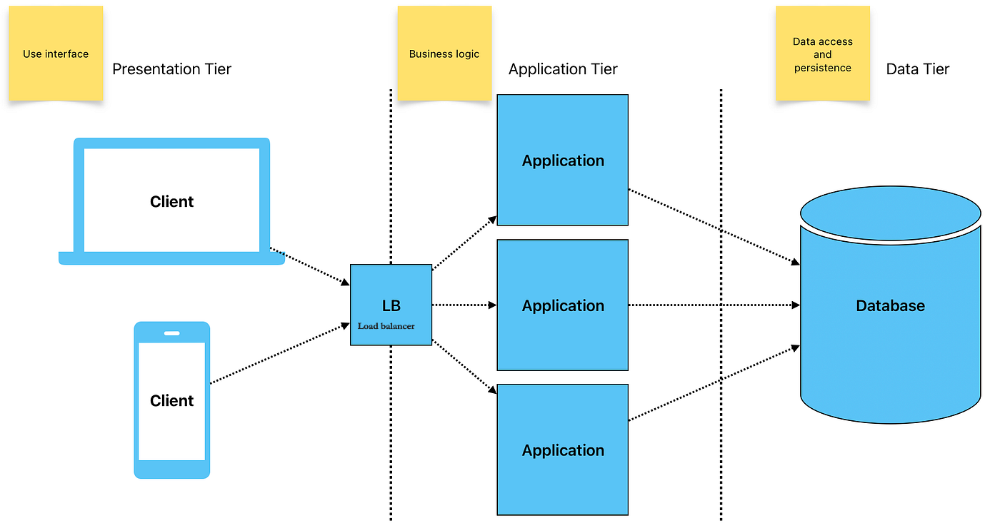

Definition
Multi-tier architecture is a client-server architecture that separates the application into multiple layers or tiers, each with a specific role and responsibility.
In a typical multi-tier architecture, there are three main tiers:
- Presentation Tier: This is the topmost layer that interacts with the user. It is responsible for displaying the user interface and handling user input. Examples include web browsers and mobile apps.
- Application Tier: This layer contains the business logic and processes the data received from the presentation tier. It acts as an intermediary between the presentation and data tiers. Examples include web servers and application servers.
- Data (Backend) Tier: This is the bottom layer that manages the database and data storage. It is responsible for storing, retrieving, and managing data. Examples include database servers like MySQL or MongoDB.
Multi-tier architecture provides several benefits, including improved scalability, maintainability, and flexibility. It allows for better separation of concerns, making it easier to manage and update each tier independently.
